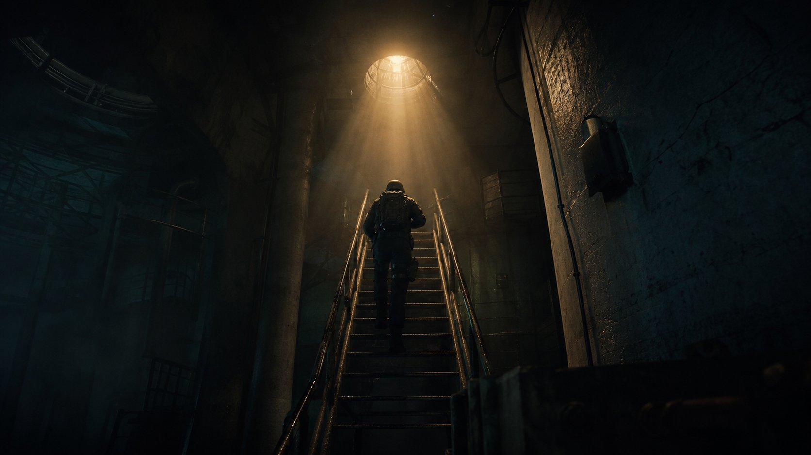

1. Niveaux de compte & déblocages
| Niveau | Déblocage |
|---|---|
| 1 | Normal — Farm, Valley, Northridge |
| 8 | Zombie Endless (Airport, PvE cooperatif) + contenu S7 |
| 12 | Lockdown — caps T5, loot supérieur, PvP hardcore |
| 30 | Forbidden — caps T6, loot épique, endgame réel |
L'XP vient des missions de faction, des succès et des kills. Les missions sont le moteur : bouclez-les en Normal Farm/Valley avant de viser Lockdown.
2. Season Rank : ce qui compte chaque saison
- Les missions de saison et le rang reset chaque saison — votre stash, Koen et réputation contacts sont conservés.
- Dépensez vos points de rang avant la fin de saison : coûts d'entrée, bonus d'XP, skins — sinon ils dorment.
- Battle Pass : les composants non consommés sont perdus à la fermeture. Priorez toujours les missions saisonnières actives.
- Stratégie reset : terminez missions S6/S7 en premier, puis montez les caisses premium.
3. Core Masteries S7 — les 3 piliers
La règle d'abord : une seule, parmi trois
La Saison 7 introduit les core masteries. Ce n'est pas une catégorie de points à distribuer : c'est un choix unique. Vous pickez une des trois core masteries, et elle s'ajoute à vos 12 points de maîtrise ordinaires. Pas les trois à la fois, pas une par saison : une seule, et elle vaut dans tous les modes où elle s'applique.
Concrètement, c'est ce qui change votre façon de charger un raid. Les trois ne répondent pas au même problème — l'une gagne des duels, l'autre gagne des extractions, la troisième gagne de l'argent.
| Core mastery | Ce qu'elle fait réellement | Elle vaut si… |
|---|---|---|
| Acoustic Earpads | Réduit l'effet d'obstruction sonore des casques qui ne supportent pas un casque audio, et rend environ 10 à 15 mètres de portée auditive supplémentaire. | Vous jouez en large, sur Northridge, Valley ou Airport, et vous comptez sur l'oreille autant que sur le viseur. |
| Tactical Belt | Ajoute quatre poches 1×1 : quatre emplacements de plus pour des grenades ou du médical, en plus de votre gilet et de votre rig. | Vous vous battez en intérieur serré, sur Armory en particulier, où la grenade décide du round. |
| Hidden Compartment | Déverrouille les compartiments cachés des conteneurs : cela vous donne une tentative de fouille supplémentaire. | Vous farm. C'est la maîtrise qui rapporte de l'argent, et elle rapporte d'autant plus qu'il y a de conteneurs sur votre route. |
Source : base de référence communautaire, guide loot et progression S7 (abibuilder.com/guides/s7-loot-guide). Donnée documentée, non publiée par l'éditeur.
Les montages qui marchent, avec leurs niveaux exacts
Les core masteries ne servent à rien si les points de maîtrise ordinaires qui les accompagnent sont distribués au hasard. Deux montages sont documentés, et ils répondent à deux objectifs opposés. Le principe est le même dans les deux cas : tout mettre au niveau 3, parce qu'un niveau 2 ne donne presque rien.
Montage PvP — gagner les duels
- FOCUS PULLER (niveau 3) — +18 % de vitesse de peek gauche et droite. Dans un couloir étroit, 18 % de millisecondes suffisent à voir l'angle en premier.
- SLEIGHT OF HAND (niveau 3) — permet de recharger un chargeur de 100 balles en 26 secondes, soit +27 % de vitesse de rechargement.
- HEAVY MOTOR (niveau 3) — réduit de 35 % le ralentissement de déplacement imposé par les casques et les armures.
- PORTER (niveau 3) — augmente directement la limite de poids de 10 kg.
- ACOUSTIC EARPADS — la core mastery, qui réduit l'obstruction sonore des casques.
Montage économie — maximiser le gain
- PORTER (niveau 3) — +10 kg de limite de poids, qui protège de la zone de pénalité jaune quand on charge un peu de loot.
- EFFECTIVE LOOTING (niveau 3) — 20 % de chance de passer directement la phase de fouille à l'ouverture d'un conteneur.
- VINSON'S FRIEND I (niveau 3) — 10 % de chance de récupérer votre arme même si vous échouez à l'extraction.
- EMERGENCY EVASION (niveau 3) — utile pour se replier et se remettre rapidement après une embuscade.
- HIDDEN COMPARTMENT — la core mastery, pour maximiser le loot et trouver les objets cachés.
Le point qui décide de tout : l'unique exception
Vinson's Friend I mérite un cas à part. C'est la seule maîtrise du jeu qui s'applique quand vous perdez : elle vous rend une chance de récupérer votre arme même en cas d'échec d'extraction. Sur une arme à 300 000 K, 10 % de chance de la sauver, c'est 30 000 K d'assurance par raid. Aucun autre point de maîtrise ne protège votre stuff comme ça.
Priorité de déblocage
Acoustic Earpads > Tactical Belt > Hidden Compartment. Le son gagne les duels ; le volume de meds gagne les extractions ; le Hidden Compartment est le luxe du vétéran.
Où elles ne fonctionnent pas
Les core masteries sont actives dans tous les modes sauf l'Arena Mode, le Covert Ops et le Zombie Endless. Les masteries normales obéissent aux mêmes cas d'exclusion. Concrètement : un Acoustic Earpads ou un Tactical Belt ne vous suivent pas dans un run Endless. L/endless se prépare autrement — par les capacités de Merit's — et c'est une erreur fréquente de vouloir y transposer un build d'inventaire. Officiel
4. Zombie Research : la progression S7 dédiée
Le Zombie Research est le système de progression de la Saison 7, alimenté par les modes zombies :
- Infected Zone (PvPvE — Farm, Valley, Airport) : points Research + amélioration des capacités spéciales des mutants.
- Zombie Endless (PvE Airport, niv. 8+) : vagues croissantes — équipe d'équipe, marchand in-raid, montées en puissance.
- Les points Research débloquent des perks permanents PvE/PvPvE pour toute la saison.
- Stratégie : grind Endless en duo/trio pour XP stable, puis pousser Infected Zone pour la tension PvP.
5. Dossiers & succès : la roadmap longue
- Extraction Expert — 100 extractions en Lockdown (T4 kit minimum recommandé).
- Extraction Master — 50 extractions en Forbidden (Northridge lurking = méthode la plus sûre).
- Boss Hunter — éliminer un boss de Forbidden (Renoir/Ajax-style) et ses gardes.
- Arena Expert — 10 manches Arena mode (weekend, 25K d'entrée, quittable juste après le spawn).
- Collectionneur — trouver un item UTOPIA ou Secret Doc (RNG absolue, mettre immédiatement en conteneur sécurisé).
6. Plan 90 jours vers l'élite
| Phase | Jours | Objectifs |
|---|---|---|
| Jours 1–7 | Niv. 1–8 | Farm Normal, rat kits, dailies, apprendre les cartes |
| Jours 8–21 | Niv. 8–12 | Zombie Endless pour l'XP sûre, Valley, premiers barter flips |
| Jours 22–45 | Niv. 12–18 | Lockdown progressif, Core Masteries (Acoustic Earpads d'abord) |
| Jours 46–60 | Niv. 18–30 | Forbidden prep : T5 kits, azimuts Northridge, boss farming |
| Jours 61–90 | Niv. 30+ | Forbidden régulier, Zombie Research max, dossier Extraction Master |
Le mot de la fin
La progression en ABI n'est jamais urgente. Chaque saison récompense la constance : dailies bouclés, missions finies, stash propre. Les top joueurs ne sont pas ceux qui jouent le plus — ceux qui jouent le plus proprement.